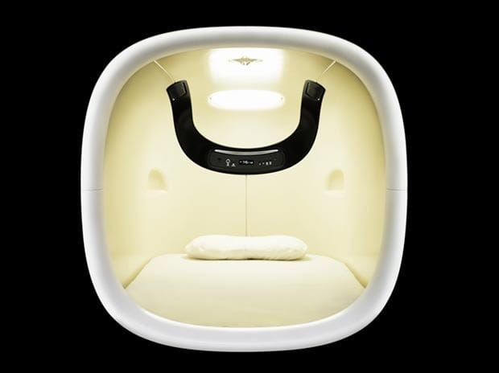

Green Wing
Отличный, слегка ебанутый английский сериал, в котором больница, если вам вдруг это важно - всего лишь антураж)
Отличный, слегка ебанутый английский сериал, в котором больница, если вам вдруг это важно - всего лишь антураж)
Объясните мне как простыня во время стирки может оказаться в пододеяльнике?! Я, находясь в здравом уме, не могу в него одеяло запихнуть (у меня рвотные позывы каждый раз, пока я один угол во рту держу, а другой запихиваю в эту малюсенькую дырочку), а тут она сама, сама, блядь, в него забирается!! Как?! Ну как?!!!
Reeder для Айфона — офигенный!

И еще картинки капсульного отеля)
48 неделя очень хороша. Откопал 83 прекрасных трека.
Завтра хватит, чтобы доехать до работы и обратно, и даже еще останется)
Нормальные шабер (о как!), щипцы, кусачки, пилка и масло стоят порядка 1000 рублей. Это два похода к мастеру. У меня, конечно, еще не так круто получается, но зато я ни разу себя не порезал!)
Просто охрененно!
Success is a journey, not a destination.
by Arthur Ashe

Они, конечно, пидарасы полные, железо у них ебнись какое дорогое, проблем с ним они, сука, не признают, все время какую-нибудь хуйню устраивают, но... покажите мне еще кого-нибудь, кто так надрочил бы своих пользователей любить и делать охуенные штуки?! ведь нет же никого)
Скачать PCKeyboardHack, замаппить спотлайт на, скажем, F13, пойти в System Preferences | PCKeyboardHack, там выбрать "Change Caps Lock" (у меня он отключен в System Preferences | Keyboard | Modifier keys) и ввести 105 (для F13). Вуаля!
А вот как убрать из спотлайта джары (и не хакать систему), я до сих пор не понял (